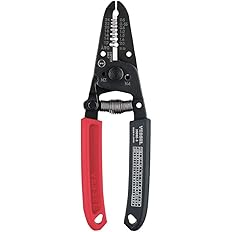
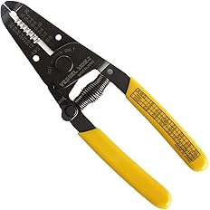
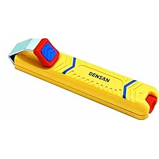
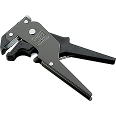
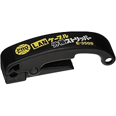

【現場で使ってる】電気工事士おすすめストリッパー6選｜用途別の選び方も解説
電気工事の現場で実際に使っているストリッパーを紹介します。
ストリッパーはどれも同じに見えますが、実際は細い制御線向き、VA線向き、ケーブル向き、LAN向きなど、
用途によってかなり使いやすさが変わります。
自分も最初は何でも1本でやろうとしていましたが、用途に合った物を使う方が作業は楽で、 失敗もしにくく、仕上がりもきれいになります。
この記事では、実際に現場で使っている物をベースに、どの作業にどのストリッパーが合うか分かりやすくまとめています。
※電気工事士が実際に現場で使っているストリッパーを、用途別にまとめています。
このページはこんな人に向いています
・電気工事で使うストリッパーを探している人
・細線、VA線、ケーブル、LANでどれを使えばいいか迷っている人
・1本で済ませるか、用途別で使い分けるか悩んでいる人
ストリッパーは「とりあえず有名そうだから」で選ぶより、よくやる作業に合った物を選んだ方が失敗しにくいです。
迷ったらここから選べばOK
ストリッパーは「人気そうな物」を選ぶより、自分がよくやる作業に合う物を選ぶ方が失敗しにくいです。
自分の現場感でざっくり分けると、まずはこの選び方でOKです。
自分は1本で全部やるより、用途ごとに使い分けています。
その方が仕上がりが安定しやすく、現場でもかなり楽です。
自分の作業内容に合ったものを選ぶのが大事です
ストリッパーは、ただ線が剥ければ何でもいいという工具ではありません。
細い制御線をよく触るのか、VA線を触ることが多いのか、ケーブルの被覆剥きが多いのかで、
合う工具はかなり変わってきます。
合っていない物を無理に使うと、被覆をきれいに剥けなかったり、芯線を傷つけたり、
余計に作業時間がかかることもあります。
現場でも1本で全部やるというより、用途ごとに使い分けている人が多いです。
自分の仕事内容に合ったものがあれば、参考にしてみてください。
ストリッパーは用途で使い分けるとかなり楽です
ストリッパーは見た目が似ていても、実際に使ってみると得意な配線がかなり違います。
細い制御線は細線向きの物の方が安心して使えますし、VA線は専用タイプの方が早くて楽です。
特に細い線は、太線向きや汎用タイプで無理に剥くと、被覆を傷めたり芯線を傷つけることがあります。
逆に用途に合った物を使うと、仕上がりが安定して、作業スピードも上がりやすいです。
自分はライトカーテンやエリアセンサーなどの配線では細線用を使っていますし、
ケーブルの被覆剥きでは専用のストリッパーを使っています。
こういう使い分けをするだけで、現場でのやりやすさはかなり変わります。
『ベッセル ワイヤーストリッパー 3500E-3』

一番よく使っている、相棒みたいなストリッパー
この工具の特にいいところ
ねじカッター付きで、M4のビスを好きな長さに切れるのがかなり便利です。
ストリップだけでなく、ちょっとした加工まで対応しやすいので出番が多いです。
いろいろな現場作業で使える万能タイプを探しているなら、この1本がかなり使いやすいです👇
これは自分が一番よく使っているストリッパーで、現場ではかなり出番が多いです。
1本でいろいろ対応しやすく、まさに相棒みたいな工具です。
線を剥くだけじゃなく、ねじカッター付きなのがかなり便利で、
M4のビスを好きな長さに調整したい時にも使いやすいです。
こういうちょっとした作業を別の工具を出さずにそのままできるのは、現場だとかなり助かります。
現場で迷った時にとりあえずこれを使うことが多く、 まず1本持っておくならかなり使いやすいタイプだと思います。
自分は「何を持って行くか迷ったらこれ」という感じで使うことが多いです。
万能寄りの1本を探している人にはかなり向いていると思います。
良かったところ
- 使用頻度が高く、1本あるとかなり便利
- ねじカッター付きでM4のビス調整がしやすい
- いろいろな場面で使いやすい
- 相棒感があるくらい出番が多い
いろいろな作業で使える万能タイプを探しているなら、このモデルを選んでおけば使いやすいです👇
▶ 『3500E-3』をAmazonで見てみる 1本でほぼ対応できる現場の相棒『ベッセル ワイヤーストリッパー 3500E-2』

細い制御線専用で使いやすいモデル
この工具の特にいいところ
ライトカーテンやエリアセンサーなどの細い配線で使いやすく、仕上がりもきれいにしやすいです。
細線を安心して剥きたい時にかなり頼れます。
細い制御線やセンサー配線が多いなら、このタイプを選べば失敗しにくいです👇
これは細い線専用として使っているストリッパーです。
ライトカーテン、エリアセンサーなんかでよく使っています。
細い線は太線用や汎用タイプで無理に剥くと、被覆を傷めたり芯線を傷つけることがあります。
一見剥けているようでも、あとで不安が残ることがあるので、自分はこういう細線では専用を使うようにしています。
このタイプは細い配線でも扱いやすく、仕上がりがきれいにしやすいのが良いところです。
制御線を触ることが多い人にはかなり使いやすいと思います。
自分はライトカーテンやエリアセンサーなど、細い配線を触る時にこのタイプを使っています。
細線作業で不安を減らしたい人にはかなり合うと思います。
こんな人におすすめ
- 制御線や細い配線を扱うことが多い人
- 仕上がりをきれいにしたい人
- 細線の作業ミスを減らしたい人
- ライトカーテンやセンサー配線を触る人
細い制御線をよく触るなら、このモデルを選んでおくとかなり使いやすいです👇
▶ 『3500E-2』をAmazonで見てみる 細線でも芯線を傷めにくく仕上がりがきれい『デンサン ケーブルストリッパー ND-800』

ケーブル被覆剥きで出番が多いモデル
この工具の特にいいところ
刃の深さ調節ができるので、ケーブルに合わせて使いやすいです。
大体何でも剥きやすく、出番がかなり多いです。
ケーブルの被覆剥きをよくやるなら、このタイプが一番作業しやすいです👇
これはケーブルの被覆を剥く時によく使うストリッパーです。
ケーブル作業ではかなり出番が多いです。
刃の深さを調整できるので、ケーブルに合わせて使いやすいのがかなり便利です。
深さ調整ができるだけで安心感が全然違って、無理に力を入れなくても作業しやすくなります。
ケーブルの種類が変わっても対応しやすく、 これ1本あると現場で助かる場面が多いと思います。
自分はケーブルの被覆剥きでかなり使うことが多く、出番の多い1本です。
ケーブル作業が多い人なら持っておくとかなり助かると思います。
良かったところ
- 刃の深さ調整ができる
- いろいろなケーブルに対応しやすい
- ケーブル被覆剥きでかなり便利
- 出番が多く、使い分けしやすい
ケーブル被覆剥きの出番が多いなら、このモデルを選んでおくとかなり作業しやすいです👇
▶ 『ND-800』をAmazonで見てみる 外皮剥きが多い現場ならかなり使いやすい『ロブテックス ワイヤーストリッパー LS55』

自分はそこまで使わないが、現場でよく見かける定番モデル
この工具の特にいいところ
自分がメインで使うことは多くないですが、使っている人をよく見かける定番モデルです。
選択肢のひとつとして知っておきやすい1本です。
定番モデルも比較しながら選びたいなら、このタイプも候補に入れておくと分かりやすいです👇
自分はあまり使わないですが、これを使っている人は現場でよく見ます。
それだけ定番として選ばれている印象があります。
自分の中ではメインではないですが、
「よく見かける工具」というのはそれだけ使いやすさや安心感があるからだと思います。
いろいろ比較したい人にとっては候補に入れておいていいモデルです。
現場でよく見かける定番も確認しておきたい人には、こういうモデルも比較対象として見ておくと選びやすいです。
こんな人に向いているかも
- 定番としてよく使われている物を選びたい人
- 選択肢を広く見て比較したい人
- ロブテックス系の工具を使うことが多い人
定番モデルも見ながら比較したいなら、このモデルもチェックしておくと選びやすいです👇
▶ 『LS55』をAmazonで見てみる 現場でよく見かける定番『ベッセル VA線ストリッパー 3200VA-1』

VAケーブル作業ならかなり便利な専用モデル
この工具の特にいいところ
VAケーブルならこれで一発で剥きやすく、作業スピードがかなり上がります。
VA線をよく触るなら持っておくとかなり楽です。
VA線作業が多いなら、専用タイプを使った方がかなり早くて楽です👇
VAケーブルを扱うなら、このタイプはかなり便利です。
1回で剥きやすいので、手間を減らしたい時に助かります。
何度も同じ作業をする時ほど、こういう専用工具の良さが出ます。
汎用タイプで少しずつやるより、専用の方が早くて安定しやすいです。
VA線作業が多い人なら、作業効率をかなり上げやすいと思います。
自分もVA線作業を早く進めたい時は、こういう専用タイプの便利さを感じます。
VAケーブルをよく触るなら持っておく価値はかなりあります。
こんな人におすすめ
- VA線作業が多い人
- 作業スピードを上げたい人
- 専用工具で効率よく進めたい人
- VAケーブルをよく扱う人
VAケーブル作業の出番が多いなら、このモデルを選んでおくとかなり楽になります👇
▶ 『3200VA-1』をAmazonで見てみる VA線を一発で剥けて作業スピードが上がる『マーベル プロメイト LANケーブル外被ストリッパー E-3508』

LANケーブル加工で便利な専用工具
この工具の特にいいところ
LANケーブルの頭を作る時に、クルッと一周回すだけで外皮が剥けます。
カッターより失敗しにくく、芯線を傷つけにくいのが助かります。
LANケーブル加工をするなら、専用工具を使った方が仕上がりも安定しやすいです👇
これはLANの頭を作る時に使っている工具です。
ケーブルに当ててクルッと一周回すだけで外皮が剥けるので、かなり楽です。
カッターでやることもできますが、慣れていないと芯線を傷つけることがあります。
その点、こういう専用工具の方が失敗しにくく、きれいに仕上げやすいです。
LAN配線を触ることがある人なら、持っておくと便利な工具だと思います。
自分もLANの頭を作る時は、カッターよりこういう専用工具の方がやりやすいと感じます。
LAN加工の失敗を減らしたい人にはかなり向いています。
こんな人におすすめ
- LANケーブル加工をする人
- 外皮剥きを失敗しにくくしたい人
- きれいに仕上げたい人
- LANの頭を作ることがある人
LANケーブル加工をするなら、このモデルを選んでおくとかなり使いやすいです👇
▶ 『E-3508』をAmazonで見てみる カッターより失敗しにくく仕上がりが安定太いケーブルについて
かなり太いケーブルになると、ストリッパーよりカッターや電工ナイフを使うことが多いです。
自分も太物はストリッパーで無理に剥くことはあまりなく、
用途に合わせて工具を使い分けています。
何でもストリッパーでやろうとするより、合った工具を使う方が安全で作業もしやすいです。
どれを選べばいい？
どれを買えばいいか迷う人は、まずこの表で自分の作業に近いものを見ればOKです。
| 機種 | 向いている作業 | 特徴 |
|---|---|---|
| 『3500E-3』 | いろいろな現場作業 | 使用頻度が高く、ねじカッター付きで便利 |
| 『3500E-2』 | ライトカーテン・エリアセンサーなどの細線 | 細線向きで仕上がりをきれいにしやすい |
| 『ND-800』 | ケーブルの被覆剥き | 刃の深さ調整ができ、出番が多い |
| 『LS55』 | 定番モデルを比較したい時 | 現場でよく使っている人を見かける |
| 『3200VA-1』 | VAケーブル作業 | VA線を一発で剥きやすい |
| 『E-3508』 | LANケーブル加工 | クルッと一周で外皮を剥きやすい |
比較してみて、自分の作業に合うものがあれば、そのモデルを選べばOKです。
用途が決まっているなら、無理に1本で全部やるより合った物を選んだ方が作業しやすいです。
最後にざっくり選ぶならこの5パターンです
- 迷ったらまず見る → 3500E-3
- 細い制御線が多い → 3500E-2
- ケーブル外皮剥きが多い → ND-800
- VA線をよく扱う → 3200VA-1
- LAN配線をやる → E-3508
「全部よさそうで決めきれない」という人は、まずこの分け方で選べば大きく外しにくいです。
用途に合った工具を選ぶと作業がかなり楽になります
ストリッパーは、何でも1本で済ませるより用途に合った物を使う方が、 失敗しにくくて仕上がりも安定しやすいです。
用途に合ったストリッパーを選ぶだけで、作業のやりやすさはかなり変わります。
ストリッパーは1本で全部やるより、用途に合った物を使った方が確実に作業が楽になります。
自分の作業内容に合う1本を選んでおくと、現場でかなり助かります。
よくある疑問
Q. ストリッパーは1本あれば十分？
A. 軽作業だけなら1本でも対応できますが、細線・VA線・ケーブルでは得意不得意がかなり違います。現場では用途ごとに使い分けた方が失敗しにくいです。
Q. 迷ったらどれから見るのがいい？
A. まず1本なら『3500E-3』が見やすいです。細線が多いなら『3500E-2』、VA線なら『3200VA-1』、ケーブル外皮剥きなら『ND-800』が分かりやすいです。
Q. LAN加工は普通のストリッパーで代用できる？
A. できなくはないですが、芯線を傷つけやすいです。LANの頭を作る作業があるなら、専用の『E-3508』の方がかなりやりやすいです。
次に合わせて見たい工具


※当サイトはAmazonアソシエイト・プログラムに参加しており、適格販売により収入を得ています。